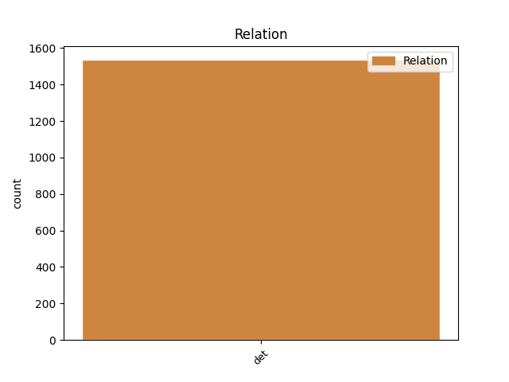
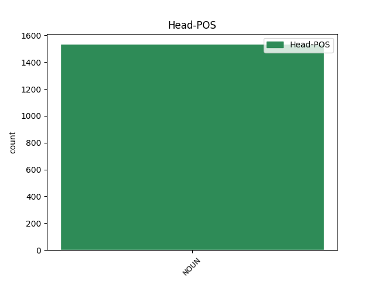
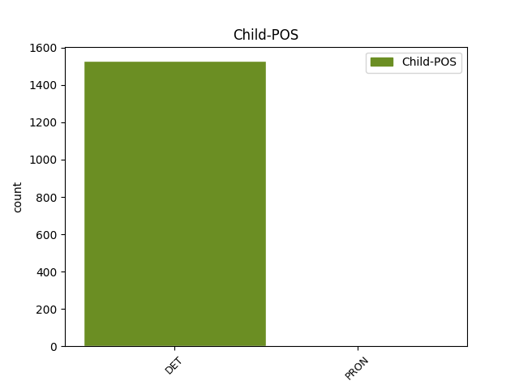

Distribution of features within this leaf



Agreement Rules sorted by frequency.
- When the dependent token is the determiner(det) of the head token, and the head token is NOUN and the dependent token is DET.
1 ان _ _ _ _ 0 _ _ _
2 کے _ _ _ _ 0 _ _ _
3 علاوہ _ _ _ _ 0 _ _ _
4 ایس _ _ _ _ 0 _ _ _
5 ایچ _ _ _ _ 0 _ _ _
6 او _ _ _ _ 0 _ _ _
7 کاماریڈی _ _ _ _ 0 _ _ _
8 پرکاش _ _ _ _ 0 _ _ _
9 یادو _ _ _ _ 0 _ _ _
10 کو _ _ _ _ 0 _ _ _
11 بھی _ _ _ _ 0 _ _ _
12 اسی یہ DET DEM Case=Acc|Gender=Fem|Number=Sing|PronType=Dem 13 det _ ChunkId=NP3|ChunkType=child
13 جگہ جگہ NOUN NN Case=Acc|Gender=Fem|Number=Sing|Person=3 0 _ _ _
14 پر _ _ _ _ 0 _ _ _
15 برقرار _ _ _ _ 0 _ _ _
16 رکھا _ _ _ _ 0 _ _ _
17 ۔ _ _ _ _ 0 _ _ _
1 یہی _ _ _ _ 0 _ _ _
2 وقت _ _ _ _ 0 _ _ _
3 ہے _ _ _ _ 0 _ _ _
4 کہ _ _ _ _ 0 _ _ _
5 امت _ _ _ _ 0 _ _ _
6 مسلمہ _ _ _ _ 0 _ _ _
7 اس یہ PRON DEM Case=Acc|Number=Sing|Person=3|PronType=Dem 10 det _ AltTag=PRON-DET|ChunkId=FRAGP|ChunkType=head
8 بھٹکی _ _ _ _ 0 _ _ _
9 ہوئی _ _ _ _ 0 _ _ _
10 انسانیت انسانیت NOUN NN Case=Acc|Gender=Fem|Number=Sing|Person=3 0 _ _ _
11 کی _ _ _ _ 0 _ _ _
12 صحیح _ _ _ _ 0 _ _ _
13 راہ _ _ _ _ 0 _ _ _
14 کی _ _ _ _ 0 _ _ _
15 سمت _ _ _ _ 0 _ _ _
16 متعین _ _ _ _ 0 _ _ _
17 کرے _ _ _ _ 0 _ _ _
18 ۔ _ _ _ _ 0 _ _ _
Disagree Examples:
1 حضرت _ _ _ _ 0 _ _ _
2 عوف _ _ _ _ 0 _ _ _
3 رضی _ _ _ _ 0 _ _ _
4 اللہ _ _ _ _ 0 _ _ _
5 عنہ _ _ _ _ 0 _ _ _
6 نے _ _ _ _ 0 _ _ _
7 حضور _ _ _ _ 0 _ _ _
8 اقدس _ _ _ _ 0 _ _ _
9 صلی _ _ _ _ 0 _ _ _
10 اللہ _ _ _ _ 0 _ _ _
11 علیہ _ _ _ _ 0 _ _ _
12 وسلم _ _ _ _ 0 _ _ _
13 کی _ _ _ _ 0 _ _ _
14 خدمت _ _ _ _ 0 _ _ _
15 مےں _ _ _ _ 0 _ _ _
16 حاضر _ _ _ _ 0 _ _ _
17 ہو _ _ _ _ 0 _ _ _
18 کر _ _ _ _ 0 _ _ _
19 ان ان DET DEM Case=Nom|Number=Plur|Person=3|PronType=Dem 20 det _ ChunkId=NP4|ChunkType=child
20 بکریوں بکری NOUN NN Case=Acc|Gender=Fem|Number=Plur|Person=3 0 _ _ _
21 کے _ _ _ _ 0 _ _ _
22 بارے _ _ _ _ 0 _ _ _
23 مےں _ _ _ _ 0 _ _ _
24 دریافت _ _ _ _ 0 _ _ _
25 کیا _ _ _ _ 0 _ _ _
26 کہ _ _ _ _ 0 _ _ _
27 '' _ _ _ _ 0 _ _ _
28 کیا _ _ _ _ 0 _ _ _
29 یہ _ _ _ _ 0 _ _ _
30 بکریاں _ _ _ _ 0 _ _ _
31 ان _ _ _ _ 0 _ _ _
32 کے _ _ _ _ 0 _ _ _
33 لیے _ _ _ _ 0 _ _ _
34 حلال _ _ _ _ 0 _ _ _
35 ہیں _ _ _ _ 0 _ _ _
36 ؟ _ _ _ _ 0 _ _ _
1 قاہرہ _ _ _ _ 0 _ _ _
2 میں _ _ _ _ 0 _ _ _
3 واقع _ _ _ _ 0 _ _ _
4 الازہر _ _ _ _ 0 _ _ _
5 یونیورسٹی _ _ _ _ 0 _ _ _
6 کے _ _ _ _ 0 _ _ _
7 مفتی _ _ _ _ 0 _ _ _
8 اعظم _ _ _ _ 0 _ _ _
9 محمد _ _ _ _ 0 _ _ _
10 سید _ _ _ _ 0 _ _ _
11 طنطوی _ _ _ _ 0 _ _ _
12 نے _ _ _ _ 0 _ _ _
13 سنٹرل _ _ _ _ 0 _ _ _
14 امام _ _ _ _ 0 _ _ _
15 حسین _ _ _ _ 0 _ _ _
16 کونسل _ _ _ _ 0 _ _ _
17 سے _ _ _ _ 0 _ _ _
18 دہشت_گردوں _ _ _ _ 0 _ _ _
19 کے _ _ _ _ 0 _ _ _
20 صدرنشین _ _ _ _ 0 _ _ _
21 غضنفر _ _ _ _ 0 _ _ _
22 مہدی _ _ _ _ 0 _ _ _
23 سے _ _ _ _ 0 _ _ _
24 ملاقات _ _ _ _ 0 _ _ _
25 کے _ _ _ _ 0 _ _ _
26 دوران _ _ _ _ 0 _ _ _
27 یہ یہ DET DEM Case=Nom|Number=Sing|Person=3|PronType=Dem 28 det _ ChunkId=NP8|ChunkType=child
28 ریمارکس ریمارکس NOUN NN Case=Acc|Gender=Masc|Number=Plur|Person=3 0 _ _ _
29 کیے _ _ _ _ 0 _ _ _
30 ۔ _ _ _ _ 0 _ _ _
1 اس وہ DET DEM Case=Nom|Number=Sing|Person=3|PronType=Dem 2 det _ ChunkId=NP|ChunkType=child
2 موقع موقع NOUN NN Case=Acc|Gender=Masc|Number=Sing|Person=3 0 _ _ _
3 پر _ _ _ _ 0 _ _ _
4 انہوں _ _ _ _ 0 _ _ _
5 نے _ _ _ _ 0 _ _ _
6 پاکستان _ _ _ _ 0 _ _ _
7 کے _ _ _ _ 0 _ _ _
8 لیے _ _ _ _ 0 _ _ _
9 نیک _ _ _ _ 0 _ _ _
10 خواہشات _ _ _ _ 0 _ _ _
11 کا _ _ _ _ 0 _ _ _
12 اظہار _ _ _ _ 0 _ _ _
13 کرتے _ _ _ _ 0 _ _ _
14 ہوئے _ _ _ _ 0 _ _ _
15 کہا _ _ _ _ 0 _ _ _
16 کہ _ _ _ _ 0 _ _ _
17 وہ _ _ _ _ 0 _ _ _
18 دعاگو _ _ _ _ 0 _ _ _
19 ہیں _ _ _ _ 0 _ _ _
20 کہ _ _ _ _ 0 _ _ _
21 اللہ _ _ _ _ 0 _ _ _
22 تعالیٰ _ _ _ _ 0 _ _ _
23 پاکستان _ _ _ _ 0 _ _ _
24 کو _ _ _ _ 0 _ _ _
25 مستحکم _ _ _ _ 0 _ _ _
26 ، _ _ _ _ 0 _ _ _
27 دہشت _ _ _ _ 0 _ _ _
28 گردی _ _ _ _ 0 _ _ _
29 سے _ _ _ _ 0 _ _ _
30 پاک _ _ _ _ 0 _ _ _
31 اور _ _ _ _ 0 _ _ _
32 ایک _ _ _ _ 0 _ _ _
33 خوش_حال _ _ _ _ 0 _ _ _
34 ملک _ _ _ _ 0 _ _ _
35 میں _ _ _ _ 0 _ _ _
36 تبدیل _ _ _ _ 0 _ _ _
37 کر _ _ _ _ 0 _ _ _
38 دے _ _ _ _ 0 _ _ _
39 ۔ _ _ _ _ 0 _ _ _
1 جبکہ _ _ _ _ 0 _ _ _
2 چیٹشور _ _ _ _ 0 _ _ _
3 پوجارا _ _ _ _ 0 _ _ _
4 اور _ _ _ _ 0 _ _ _
5 سوربھ _ _ _ _ 0 _ _ _
6 تیواری _ _ _ _ 0 _ _ _
7 بھی _ _ _ _ 0 _ _ _
8 بنگلور _ _ _ _ 0 _ _ _
9 کے _ _ _ _ 0 _ _ _
10 بیٹنگ _ _ _ _ 0 _ _ _
11 شعبہ _ _ _ _ 0 _ _ _
12 کو _ _ _ _ 0 _ _ _
13 تقویت _ _ _ _ 0 _ _ _
14 دے _ _ _ _ 0 _ _ _
15 رہے _ _ _ _ 0 _ _ _
16 ہےں _ _ _ _ 0 _ _ _
17 لیکن _ _ _ _ 0 _ _ _
18 چینائی _ _ _ _ 0 _ _ _
19 سوپر _ _ _ _ 0 _ _ _
20 کنگس _ _ _ _ 0 _ _ _
21 اور _ _ _ _ 0 _ _ _
22 دکن _ _ _ _ 0 _ _ _
23 چارجرس _ _ _ _ 0 _ _ _
24 کے _ _ _ _ 0 _ _ _
25 خلاف _ _ _ _ 0 _ _ _
26 یہ یہ DET DEM Case=Nom|Number=Sing|Person=3|PronType=Dem 27 det _ ChunkId=NP8|ChunkType=child
27 کھلاڑی کھلاڑی NOUN NN Case=Acc|Gender=Masc|Number=Sing|Person=3 0 _ _ _
28 نشانے _ _ _ _ 0 _ _ _
29 کے _ _ _ _ 0 _ _ _
30 تعاقب _ _ _ _ 0 _ _ _
31 مےں _ _ _ _ 0 _ _ _
32 ناکام _ _ _ _ 0 _ _ _
33 رہے _ _ _ _ 0 _ _ _
34 تھے _ _ _ _ 0 _ _ _
1 اس _ _ _ _ 0 _ _ _
2 کے _ _ _ _ 0 _ _ _
3 ذریعہ _ _ _ _ 0 _ _ _
4 ہم مےں DET DEM Case=Acc,Dat|Number=Plur|Person=1|PronType=Dem 5 det _ ChunkId=NP2|ChunkType=child|Tam=ko|Vib=کو
5 اقلیتیں اقلیت NOUN NN Case=Nom|Gender=Masc|Number=Plur|Person=3 0 _ _ _
6 اپنے _ _ _ _ 0 _ _ _
7 حقوق _ _ _ _ 0 _ _ _
8 حاصل _ _ _ _ 0 _ _ _
9 کر _ _ _ _ 0 _ _ _
10 سکتے _ _ _ _ 0 _ _ _
11 ہیں _ _ _ _ 0 _ _ _
12 ۔ _ _ _ _ 0 _ _ _